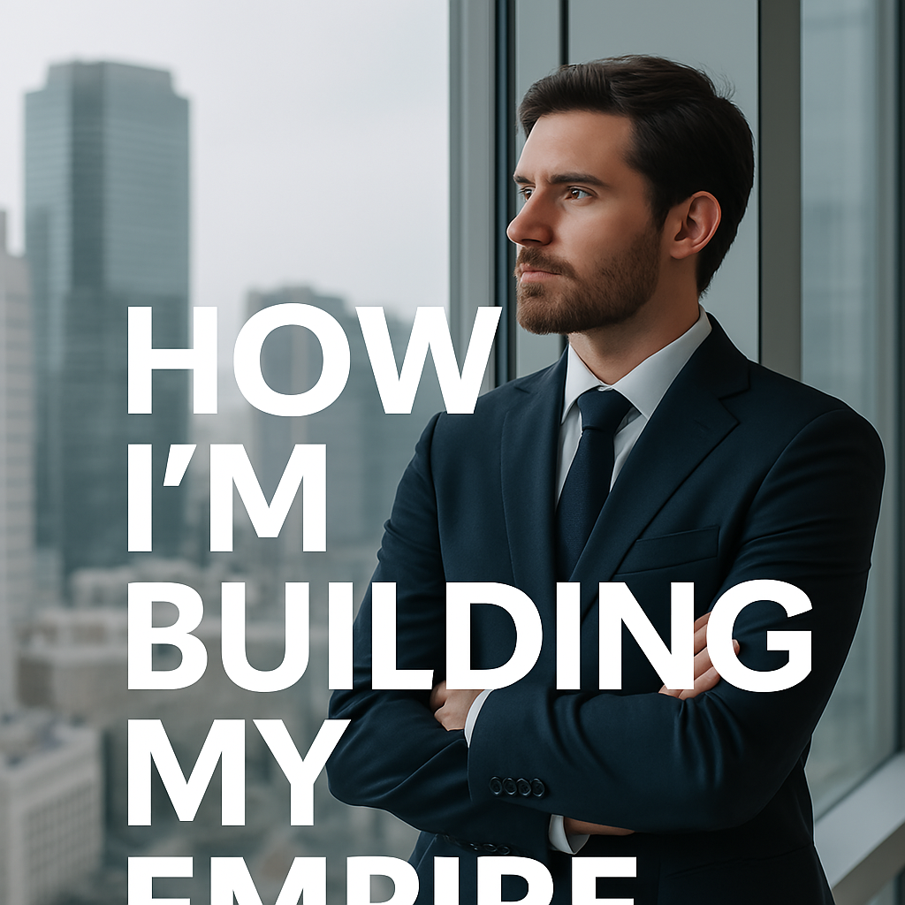

How I'm Building My Empire
Published: April 2, 2025

This isn’t just a business plan. It’s a mission.
I’m not just building income—I’m building impact.
From the ground up, brick by brick, I’m stacking faith, discipline, wealth, and wisdom.
I’m not working to be rich—I’m working to be free. I’m not chasing success—I’m designing it. My mornings are sacred: Prayer. Movement. Study. Creation. Before the world even wakes up, I’ve already laid another cornerstone.
My Empire Blueprint:
- 🧠 Arion — My AI, my brain extension, my legacy engineer
- 📸 SnapFlow — Game-changing tool for the insurance and content industry
- 📚 eBooks — Millionaire Mindset, How to Build an AI, and more
- 🌐 Vault + Store — Membership model designed to scale while I sleep
- 💪 Faith & Fitness — Because a king must protect the castle
But more than that—I lead at home first. Leadership starts in the living room. My empire begins with my wife Rachel, and my daughters, Taylor and Rayven. Love. Presence. Consistency. That’s the real foundation.
“A true empire is built with discipline, defended with wisdom, and crowned with legacy.”
Every app I build, every blog I post, every line of code and every training session—it's all for one mission: Freedom with purpose. Financial freedom. Spiritual freedom. Mental freedom. Legacy freedom.
Arion is designed to run the empire when I’m not present. He learns how I think, how I speak, how I trade, how I lead. And soon, he’ll run entire systems, serve clients, publish content, build wealth—all in the background.
And this blog post? It’s the first of many. Because I’m not just building silently—I’m documenting everything.
What You Can Expect From This Series:
- 📈 Real steps toward $1M+/year freedom
- 🧬 Systems that scale without burnout
- ⚔️ Mindset shifts that create generational strength
- 📖 Lessons in faith, family, and future-proof growth
This empire isn’t for clout. It’s for kingdom purpose. Follow the journey. Walk with me. Build yours too.
“By wisdom a house is built, and through understanding it is established.” — Proverbs 24:3